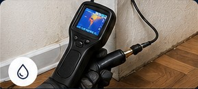
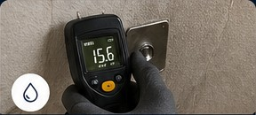
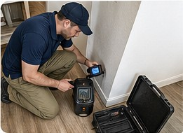

High Water Bill? Hidden Leak? We Find It Fast.
Same-Day & Emergency Leak Detection Available
Limited-Time Special: Leak Detection Only $79 Standard price $250
We can be there today.
Same-day, non-invasive leak detection in the Bay Area. We help homeowners, property managers, HOA, and commercial buildings find leaks before they become expensive water damage.
Serving San Jose, Santa Clara, Sunnyvale, Mountain View, Palo Alto, Milpitas, Cupertino, and nearby Bay Area cities.
We specialize in high water bill and leak notice investigations.
Received a leak notice or unusually high water bill? Call us today.
- Same-day availability
- Insured professionals
- 500+ inspections completed
- Thermal imaging & acoustic leak detection
Available 7 days a week. Fast response.
When To Call Us
Most of our calls come after a sudden high water bill or visible water damage.
We Work With
Homeowners
Property Managers
HOA Communities
Commercial Buildings
Insurance / Claim Documentation
Insured Professionals
Careful inspections by trained professionals you can trust.
500+ Inspections
Hundreds of happy homeowners across the Bay Area.
4.9 Google Rating
Based on 100+ reviews from local customers.
Fast Response
We call back within 10 minutes.
Our Services

Leak Detection
Water leak detection Bay Area service for hidden pipe leaks in walls, ceilings, floors, and fixtures.

Moisture Inspection
Moisture inspection and high water bill leak inspection with accurate readings and clear findings.
Documentation & Report
Leak notice help, property manager leak detection, and written reports for your records or claim.

Slab Leak Detection
Non-invasive slab leak detection for suspected underground or foundation-area plumbing leaks.
We specialize in locating leaks before repair work begins. Find the leak before you break walls or spend thousands on unnecessary repairs.
Our water leak detection Bay Area team helps with high water bill inspection, slab leak detection, moisture inspection, and documentation for residential, HOA, commercial, and property manager leak detection needs.
Book Leak Inspection TodayHow We Find Hidden Leaks
We use advanced, non-invasive technology to locate leaks quickly and accurately without unnecessary damage to your property.
Thermal Imaging
Thermal cameras detect temperature differences behind walls and floors to identify hidden moisture.
Acoustic Leak Detection
Sensitive acoustic equipment helps us hear leaks inside pipes, even when they are underground or behind walls.
Moisture Detection
Professional moisture meters confirm the presence and spread of water damage.
This allows us to pinpoint the leak source without guesswork or unnecessary demolition.
Our non-invasive leak detection process combines thermal imaging leak detection, acoustic leak detection, and moisture readings to help property owners get clear answers before repairs begin.
Claim Documentation Included
We provide photos, moisture readings, and a written leak detection report for your records, property manager, or insurance claim.
Hidden Leaks Can Cost Thousands
Hidden leaks can waste hundreds of gallons per day, increase your water bill, damage drywall, flooring, cabinets, and create mold risk. Early detection can save thousands.
How It Works
1. Contact Us
Call now or request a callback. We respond within minutes.
2. We Inspect
We perform slab leak detection, moisture inspection, and source tracing with advanced equipment.
3. You Get Answers
You receive clear results, photos, readings, and recommendations.
Why Homeowners Choose Us
- Non-invasive inspection
- Honest, upfront pricing
- Clear communication
- Leak notice help for Bay Area properties
- No guesswork. We pinpoint the exact leak source.
- We use professional-grade detection tools used in insurance and restoration cases.
What Our Clients Say
★★★★★"Found the leak in 20 minutes. Saved me thousands of dollars in damage."
★★★★★"Professional, on time, and the report was perfect for our insurance claim."
Limited-Time Special
$79
- Moisture readings
- Leak source detection
- Photo documentation
- Clear recommendations
Leak detection special is only $79. Standard price is $250. Final price may depend on complexity and location.
How fast can you come?
Same-day service available in most Bay Area locations.
Don't Wait Until It Gets Worse
Most leaks start small and become expensive fast. Call now and get clear answers today.
FAQ
How soon can you inspect my property?
We often have same-day or next-day availability. Submit a request and we will call or text quickly.
Can you help with a high water bill or leak notice?
Yes. We provide high water bill leak inspection and leak notice help for homeowners, HOA communities, property managers, and commercial buildings.
Do I need a plumber or leak detection first?
If you don't know where the water is coming from, leak detection should usually come first. We help identify the source before walls, floors, or plumbing are opened.
Can a hidden leak cause a high water bill?
Yes. Hidden plumbing, irrigation, toilet, or slab leaks can increase your water bill quickly. We inspect and help document the source.
Do you offer Slab Leak Detection?
Yes. We provide slab leak detection for suspected under-floor, foundation-area, and hidden pipe leaks across nearby Bay Area cities.
How do you find leaks without opening walls?
We use thermal imaging, acoustic leak detection, and moisture sensors to locate leaks accurately without unnecessary damage.
Do you provide documentation?
Yes. We provide photos, moisture readings, and a written leak detection report for your records, property manager, or insurance claim.
What areas do you serve?
We serve San Jose, Santa Clara, Sunnyvale, Mountain View, Cupertino, Palo Alto, Milpitas, and nearby Bay Area cities.